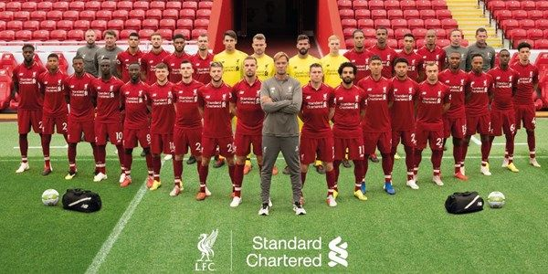

- Nom: Liverpool
- Année: 1892
- Liverpool est un club de football anglais fondé le 3 juin 1892
et installé dans la ville de Liverpool, dans le nord-ouest de l'Angleterre. Il évolue à
Anfield depuis sa création. Ses joueurs s'entraînent à Melwood et sont surnommés les Reds.
L'emblème du club est le Liver bird ; son hymne et sa devise, You'll Never Walk Alone,
est devenu un chant mondialement connu.
Liverpool a un des plus beaux palmarès européens avec six Ligues des champions,
trois Coupes de l'UEFA et trois Supercoupes de l'UEFA, et l'un des plus grands
palmarès anglais avec dix-huit championnats d'Angleterre, sept Coupes d'Angleterre,
huit Coupes de la Ligue et quinze Community Shield.
Le Liverpool Football Club est aussi célèbre pour les deux drames que ses supporteurs ont
traversé dans les années 1980 : le drame du Heysel en finale de coupe d'Europe
(qui causa la mort de 39 supporteurs), et la tragédie de Hillsborough qui a causé la
mort de 96 supporters de Liverpool. Le club a également plusieurs rivalités marquées avec
notamment Everton, le deuxième club de la ville de Liverpool, dans le cadre du derby
du Merseyside, ainsi que Manchester United, avec qui il est l'une des équipes les plus
titrées d'Angleterre, dans le cadre du derby d'Angleterre.